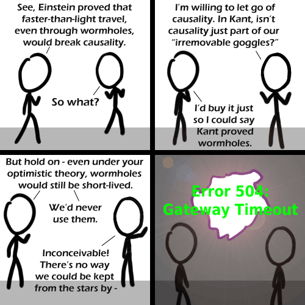

Comic JK 504
When I Feel Like It
⇤
<
?
>
⇥

⇤
<
?
>
⇥
Forum
.
RSS
.
Digg
.
Facebook
.
Reddit
.
Twitter
.
Stumbleupon
Enter your thoughts on number 504 here. Please, no spamming, trolling, or portals. A 504 for 504! Faster than light travel IS possible, you just can't travel AT the speed of light, so can't get fast enough to prove it... >sonic rainboom. >Yeah, they say that if you were traveling faster than the speed of light, you would never be able to travel at sub-light speeds. >> so FTL travel is possible, you just can't accelerate up to it.... >>>or something about getting screwed once you wanted out Inperambuable! >alt-text made it awesome. >>After alt-text I had to go back and read this in Princess Bride voices. Made it much better. Well, to be perfectly clear, while it has been shown that such an event could break causality, we have absolutely no scientific or mathematical proof that it is not possible. In fact, according to modern physics, travel through wormholes is possible, provided the existence of negative matter.... but that is a discussion for another comic :) >Yes, but in physics, we have no evidence to suggest that an object can have negative mass. It'd break things... Would be fun though. >>Isn't negative energy evidence of negative mass? If E=mc^2 and c is constant, a negative value for E would require a negative value for m. >>>Only we don't see negative energy anywhere either. We do see 'negative' charge, but that is still a positive amount of energy. From what we have seen, energy>0 at all times (although we can imagine energy being 0 somewhere, we haven't proved it can be) >>>>Energy < 0 would mean something would be less than 0 Kelvin... which, I'm told, is pretty cold... Energy = 0 is something at 0 K. >>>>>How can molecules move slower than not at all? >>>>Come on, guys. I know it might be important, but let's not discuss the physics of the comic and just laugh at the comic's humour value. That's what a comic is for, right? - Negative Twoth >>>>>We do that first. Then we discuss the physics of it. >>>>>>Also, STFU Twoth. If you don't want to read the posts, then don't read 'em. Leave us armchair physicists alone or we'll be forced to bust out the X-ray microwaves... WOOOOOOOOOOOOOO! Your anus consistently breaks the laws of physics every time I whip it out.